October is done, now to november. Yues that does make today halloween a holiday i hate (not because oh americans but i was terrified of costumes as kids and hated going door to door so it was always the worst and thats something i just gotta get over) but my solution to this is im going to see sam campbell tonight which will be fun and also im in an apartment building theyre not going to have kids go up and down trick or treeting
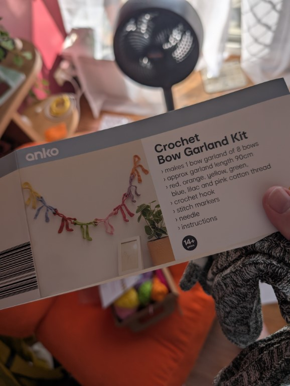
I bought this on a lark at kmart and then got home to find at least 12 different instructions on just what nots you do and a list of numbers so i put it back in th ebox and then my mum took it because she likes crochet and that shit aint for me
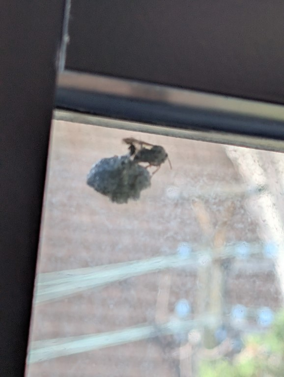
At work an wasps nest has started forming outside our conference room window and its so fascinating as it would be so easy to reach out and rip it off but also wasps. And also i don't know if im allergic to them or not i havent asked my mum yet because all i can think is “if you ask someone if you are allergic to wasps the immediate thought is that youve been stung by a wasp”
Went to see back to the future on some rush tickets and then arrived early and sat next to this old woman and was like “fuck who are you” and it was driving me nuts (At one point i googled old woman politics and that didnt help) but then a man came over and was like “americans have one thing right, they salute their soldiers. Im so thankful for what you served us with” and so i took a creep shot sent it to someone and then was like “oh yes of course its fucking bronwyn biship the speaker of the house under tony abbott who is now a sky news presenter” anyway show was fun i hope she rots in hell
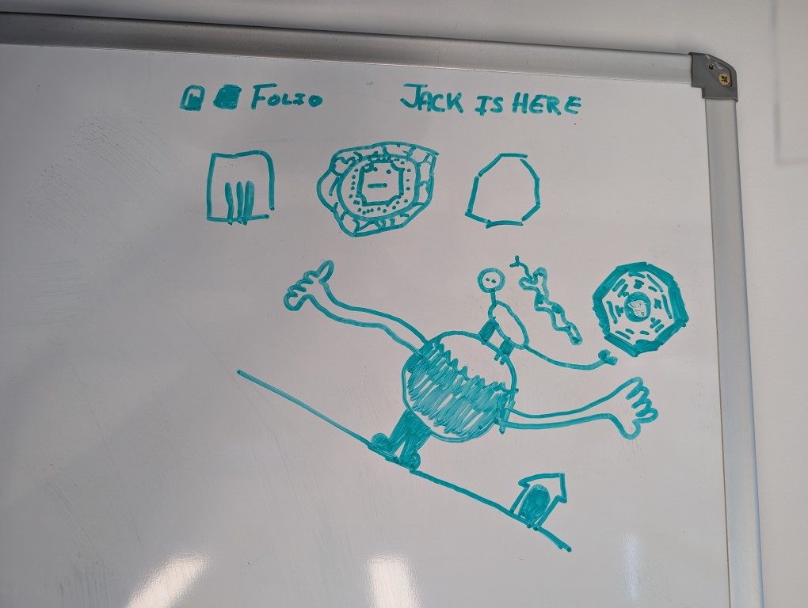
During my works all hands there aren't enough chairs for everyone so i sit up on the cupboard with my back to the whiteboard, and i got so bored that i just started doodling and it was so funny that after everyone was like “damn thebosses kid just sat there still the whole meeting” and my adhd ass couldnt sit still for 20 mins without doing something
Ok im trying out ascots or idk what to call them its just fun to dress up gay
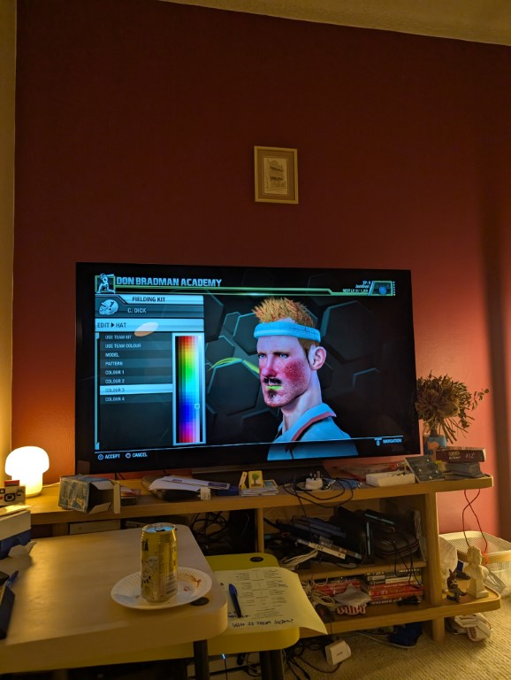
I bought a studio amount of ps4 spots games with the intention of doing monster factories and this fella was such a monster, still have no idea how to actually play as him tho
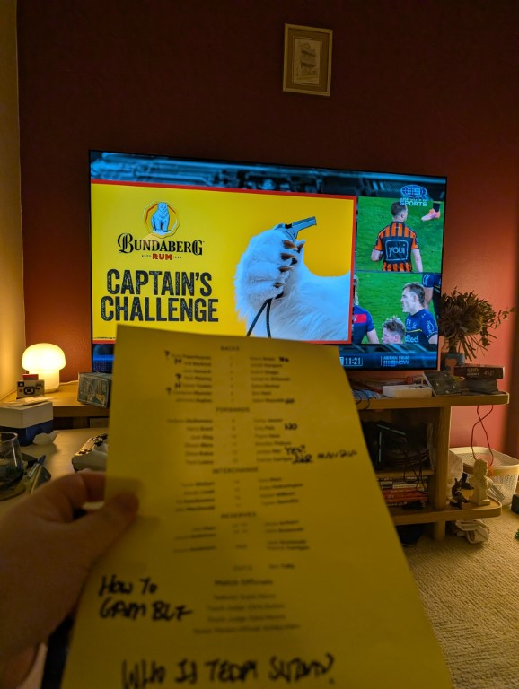
Played hot or not at the nrl grand finale, surprisingly not a lot of the queensaldners were bangable
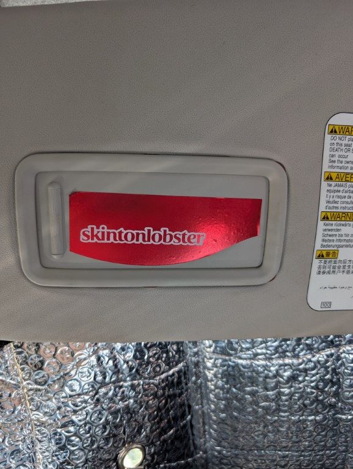
Went for lunch with my grandparents at the yacht squadron and my brother drove me, he had this in his car which was great
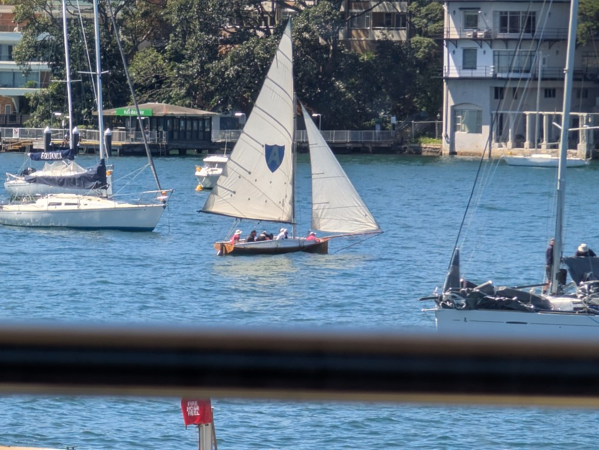
Also saw this boat in the water and it kept looking like it was going to sink, they had to be escorted out of the mooring because it was so windy it was kinda hilarious to watch
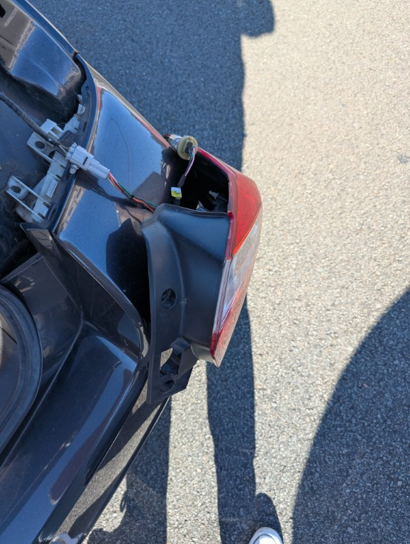
Then when i went to drive home my brother told me i had a broken break light, so i had to find a new bulb (annoying) get home only to find that the bolt which has a philips head in it was so rusted it was just stripping so back to super cheap auto to get a wrench set and then i fixed it in the carpark all because i didnt want to spend $20 for them to install it
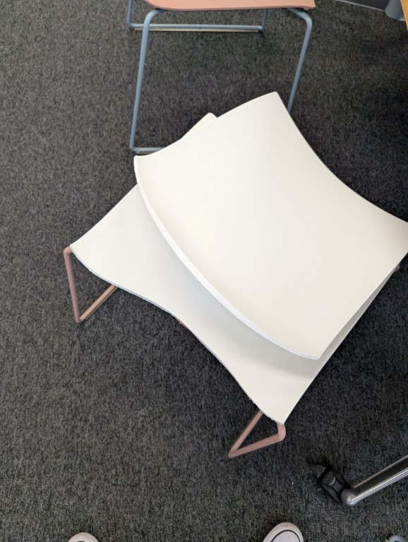
The chair after it broke on me, im still reluctant to sit in them because you know ptsd but also its not real but also it is idk theyre also super uncomfrotable
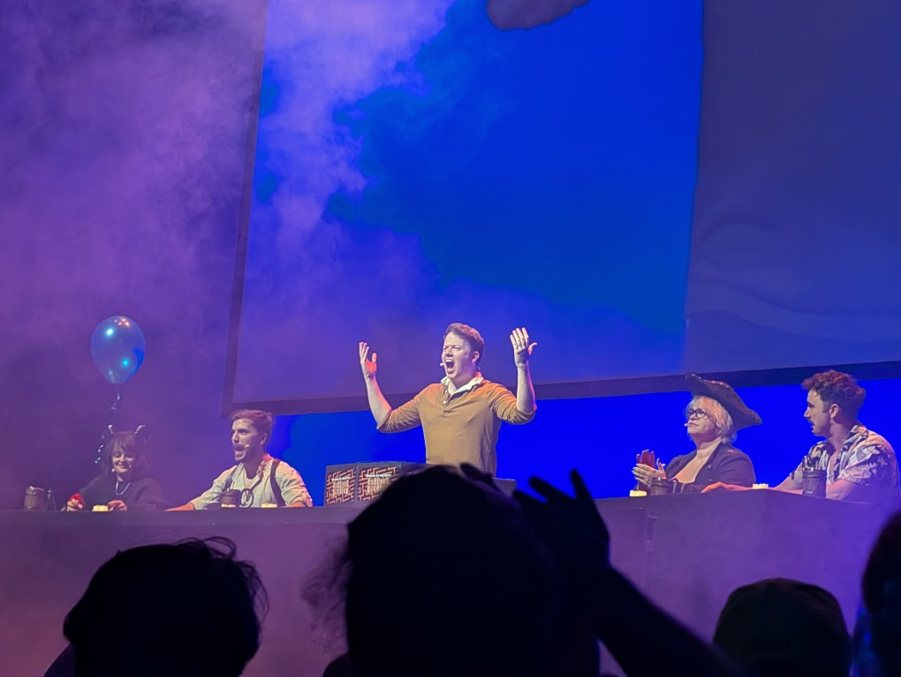
Saw brenan lee mulligan do dnd that was fun
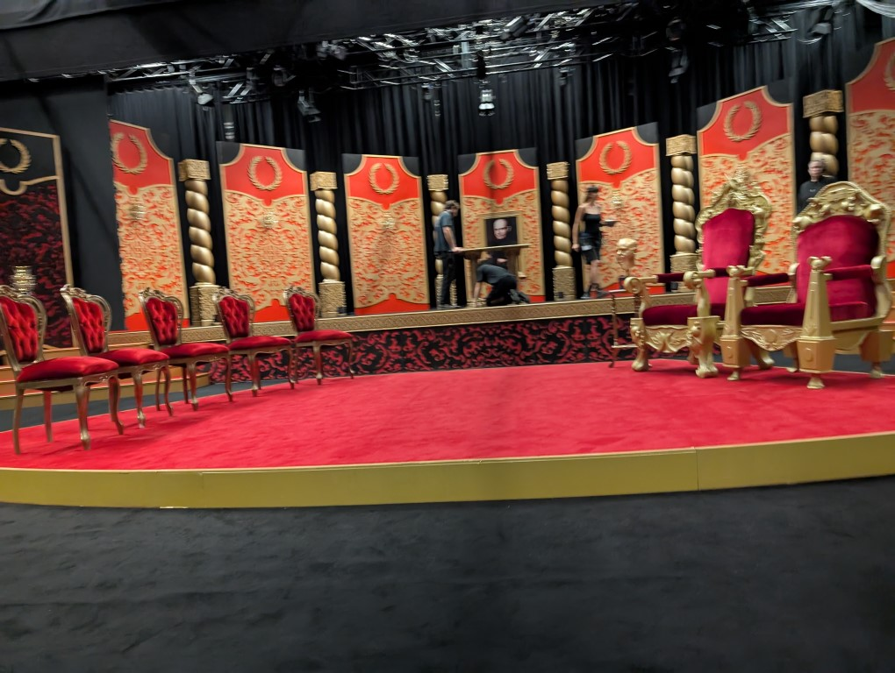
Watched the s6 recording for aus taskmaster which had 2 people who i fuckin love so thats fun
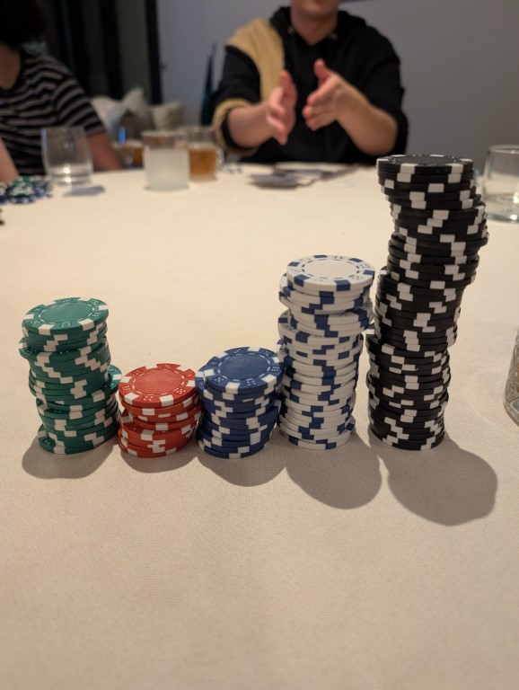
I somehow did ok at poker night? Until it was revealed that the dealer was cheating the whole time but i still got a fucking straight in and won big so eat it up fucko
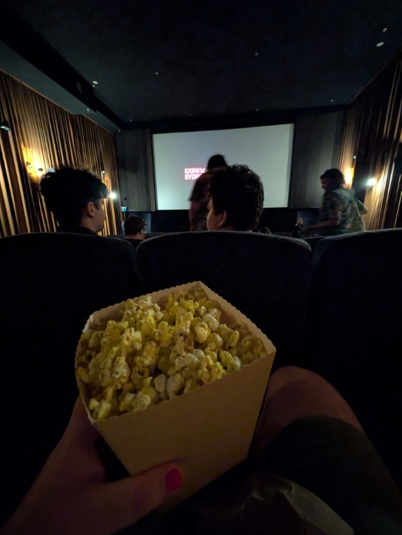
Saw nirvana the band the show the movie at sxsw sydney and it was their closing night and i was slightly hungover eating popcorn with no drink, movie good but god damn nerds are nerds
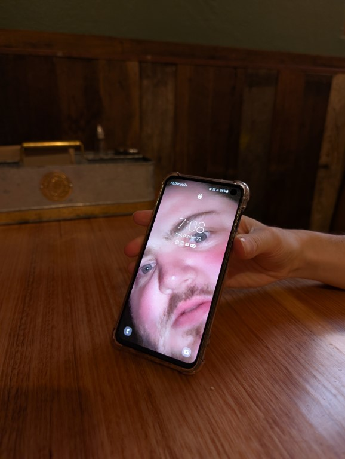
Eric set his phone wallpaper to this and i hate it
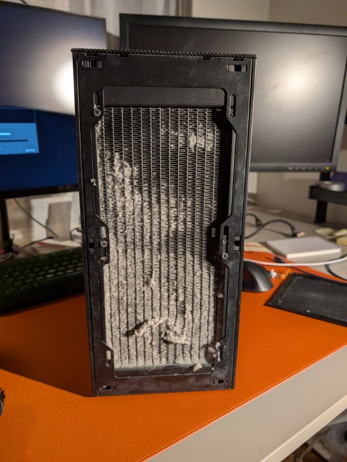
I wondered why my pc was thermal throttling during fortnite and uh, dust your pc folks (turns out this is still happening for me which is annoying as i want to play the simposns!!!!)
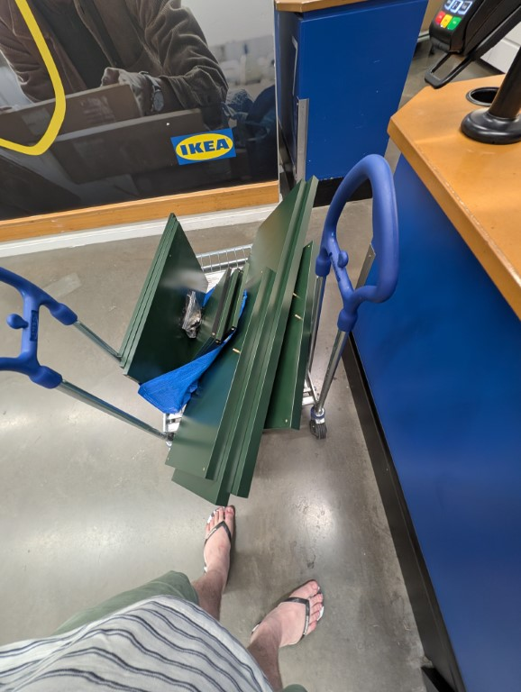
Returned a bookshelf to ikea 11 months after i bought it and the guy was so rude i hate it (look, should i have been returning it? Maybe not but its their policy! Fuck that guy)
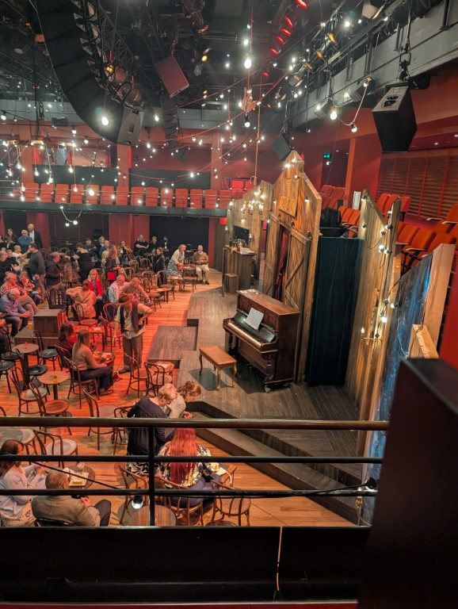
Saw calmity jane at the opera house and was on a stool and it was fun and Kala Gare came up and sat with me during the intro which was wild as the last time i was in this room was watching her do six
I have been influenced into watching the la dodgers play baseball by a friend and its such a wild game. There's no concept of a tie in the world series so the game the other night that I spent most of my arvo watching went for SIX HOURS because they were tied and then they have had to play another game the next 2 nights in a row it's bonkers
Do I understand how scoring works? Nope. Am I getting way to involved in the umpire calls? Absolutely. Also for some reason the idea of the new York teams makes me angry and for the life of me I cannot work out why.
Growing up i played nrl and afl, but i sucked at both of them. Like real bad, i remember catching the ball once in AFL and freezing over what to do (i ended up passing it to sudket fraser crowse no i shant be checking if thats how you spell his name) so i didnt experience head going boing very often (although i did once get properly dumped by a wave during nippers and that stunk) so when i was just in my works conference room leaning slihglty back (like you know not rocking but just applying my weight to the chair) and the fucker snaps off and i end up on the fucking hard floor going “ow my shoulder blade hurts” it stunk. And then what stunk was that i was on a call with my boss and then went right back to presenting what i was talking about but legit struggled so much to be able to recall shit that i got so worried i googled concussion and had to check that i didnt meet the criteria of the call an ambulance section (i didnt thankfully) but anyway my boss was more concerned that the chairs shouldnt do that vs “does jack have a concussion” and honestly? It does hurt. Like it fucking stings that he didnt see that happen and go “jack go to the doctor you are not ok”
Also the doctor explicitly told me that i shouldnt get another head injury in the next 4-6 weeks and i sorta openly laughed at him, but then later on my brother was like “yeah his saying don't play intensive spots where you can get an head injury” and it made so much more sense then what i was thinking (which is me falling off a chair)
Ive also had a sore wrist from thai which isnt a head injury but is just annoying, like its not stopping me from doing things but just making me aware of my wrist which ew
And so thats a month done. Have i been thinking about april fools already? Possibly who can say. Well i can if i don't have your address you should tell me because april fools is coming up and you know what that means